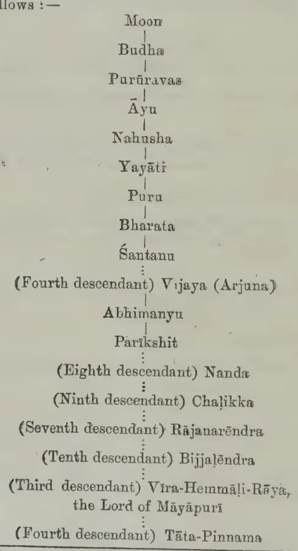

Vellangudi Plates of Venkatapati-Deva Mahara I : Saka-Samvat 1520
Reading this page
p. 23 is the page number printed in the volume; PDF 391 is that page's place in the scanned PDF, the page to open in the source scan. The badge at the bottom right shows the page you are reading as you scroll: click it to show printed or PDF numbers, or both, and to jump to a page. ↑ Top takes you back to the start.
Footnotes are numbered through the article and gathered at its end: click a number in the text to read its note in place, and ↩ in the notes to come back. Plates stand where the volume binds them, at the end of the paragraph they interrupt; All plates shows them together.
VELLANGUDI PLATES OF VENKATAPATI-DEVA-MAHARAYA I : SAKA-SAMVAT 1520.
The inscription edited below is engraved on a set of seventeen copper-plates.1 These have the shape common to all inscribed plates bearing the deeds ōf grants made by the kings of the Vijayanagara dynasty of the period to which this set belongs. In the curved upper part of each of these plates is a round hole through which the binding ring is meant to pass; to the proper left of this hole and on the first side of each plate is marked the number of the plate in Telugu-Kannaḍa numerals. The rims are raised to protect the writing from damage. When the set came to me for examination, there was no ring. The first plate is engraved on the second side, and the last one on its first side only. Plates 7, 13 and 14 are lost; since these belong to that part of the document which enumerates the names of donees, the historically important portion of the record is intact. The preservation of the inscription is very good. From impressions taken under my supervision, as also from the originals, I now edit the inscription.
The alphabet of the record is Nandināgarī; the sign-manual of the king, the word Śrī-Venkatēśa, is in the Telugu alphabet. There is nothing peculiar in the orthography of the inscription demanding special comment. All the faults usual in the other documents of the Vijayanagara kings are also found in this; for example, the use of the anusvāra for the varga-pañchama, sa for śa, etc.
The grant belongs to the reign of the king Venkaṭapati-dēva-Mahārāya. His genealogy is traced from the moon as follows :—
